Exercise Set 0 - Setup
Welcome to your first exercise set! Before we can start analyzing actuarial data and building models, we need to set up our development environment. This session will ensure everyone has the necessary tools installed and configured correctly.
Core Development Tools
1. Python (via Anaconda)
Python is our primary programming language. We’ll install it through Anaconda, which is a distribution that includes:
- Python interpreter
- Package manager (conda/pip)
- Pre-installed data science libraries
- Jupyter Notebook
- Spyder IDE
TipWhy Anaconda?
Anaconda simplifies package management and deployment. It comes with over 250 pre-installed packages commonly used in data science, saving you hours of installation time.
2. Jupyter Notebooks
Interactive computing environment where you can:
- Write and execute code in chunks (cells)
- Include formatted text, equations, and visualizations
- Create reproducible analyses
- Share your work easily
3. Integrated Development Environments (IDEs)
Choose your coding environment based on your experience level and project goals:
Best for: Learning, exploration, data analysis, course exercises
Why choose Jupyter:
- See results immediately after each code cell
- Mix code, text, and visualizations in one document
- Perfect for data exploration and prototyping
- Easy to share analyses
- Built into Anaconda
Features:
- Interactive code execution
- Rich output display (plots, tables, HTML)
- Markdown support for documentation
- Easy export to HTML, PDF
- No complex setup required
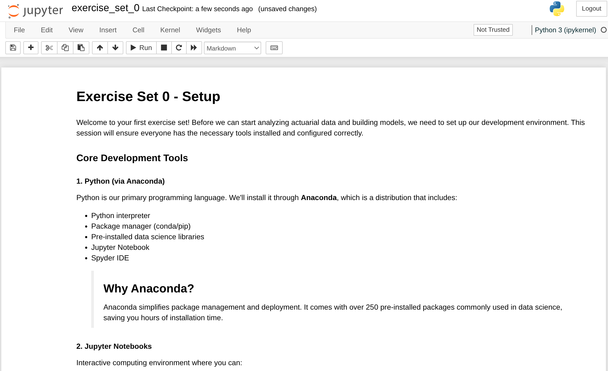
TipPerfect for Course Work
Jupyter is ideal for all course exercises and your final project exploration phase. Most data scientists start their analysis in Jupyter!
Best for: Larger projects, script development, version control
Why choose VS Code:
- Professional development environment
- Excellent Python support
- Integrated terminal and Git
- Powerful debugging tools
- Extensions ecosystem
Features:
- Syntax highlighting and IntelliSense
- Integrated Jupyter notebook support
- Built-in version control
- Multiple file management
- Customizable with extensions
Download: https://code.visualstudio.com/
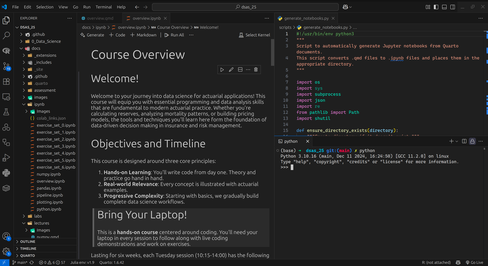
NoteGrowing Into VS Code
As your projects become more complex (multiple files, classes, modules), VS Code becomes invaluable. Great for the implementation phase of your final project.
Best for: AI-assisted development, rapid prototyping, complex projects
Why choose Cursor:
- AI-powered code completion and generation
- Natural language to code conversion
- Intelligent refactoring suggestions
- Built on VS Code foundation
- Perfect for productivity acceleration
Features:
- AI pair programming
- Context-aware suggestions
- Code explanation and documentation
- Automatic bug detection
- Multi-language support
Download: https://cursor.com/
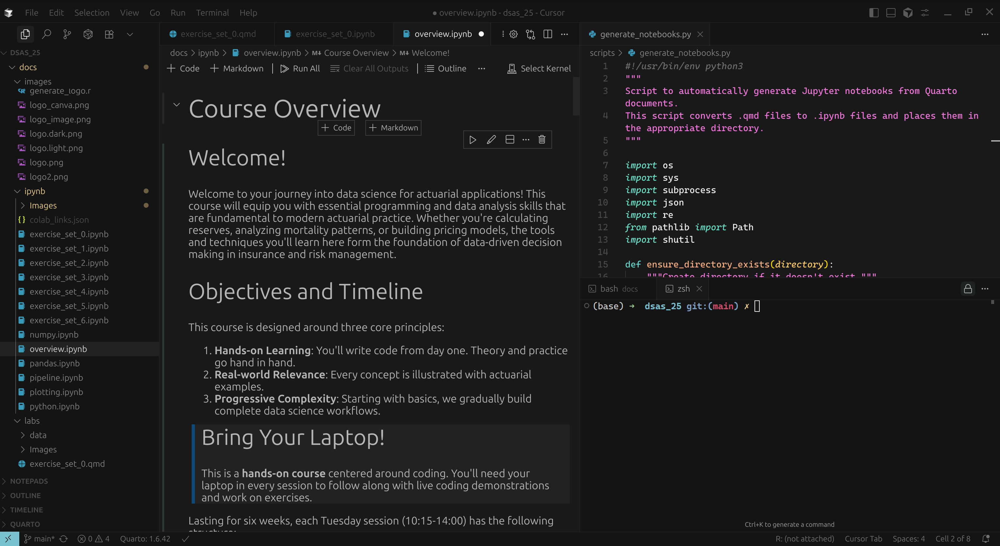
WarningUse Responsibly for Learning
While Cursor is powerful, rely on it only after mastering fundamentals. Use it for your final project, but learn Python basics manually first!
IDE Recommendations by Course Phase
| Course Phase | Recommended IDE | Why |
|---|---|---|
| Setup & Python Basics | Jupyter Notebook | Immediate feedback, easy to learn |
| NumPy & Pandas | Jupyter Notebook | Perfect for data exploration |
| Project Exploration | Jupyter Notebook | Interactive analysis and visualization |
| Project Implementation | VS Code or Cursor | Better for larger codebases |
| Final Report | Quarto + any IDE | Combine code and narrative |
TipYou Can Use Multiple IDEs!
Many professionals use Jupyter for exploration and VS Code/Cursor for implementation. Start with Jupyter and gradually incorporate others as needed.
4. Git and GitHub
Version control system and platform for:
- Tracking changes in your code
- Collaborating with others
- Creating a portfolio of your work
- Backing up your projects
5. Command Line Interface (Terminal/Shell)
Essential for:
- Navigating file systems
- Running Python scripts
- Managing packages
- Using Git commands
6. Quarto
A scientific publishing system that:
- Combines code, results, and narrative in one document
- Creates professional reports, presentations, and websites
- Supports Python, R, Julia, and Observable
- Exports to HTML, PDF, Word, and more
- Perfect for creating reproducible research

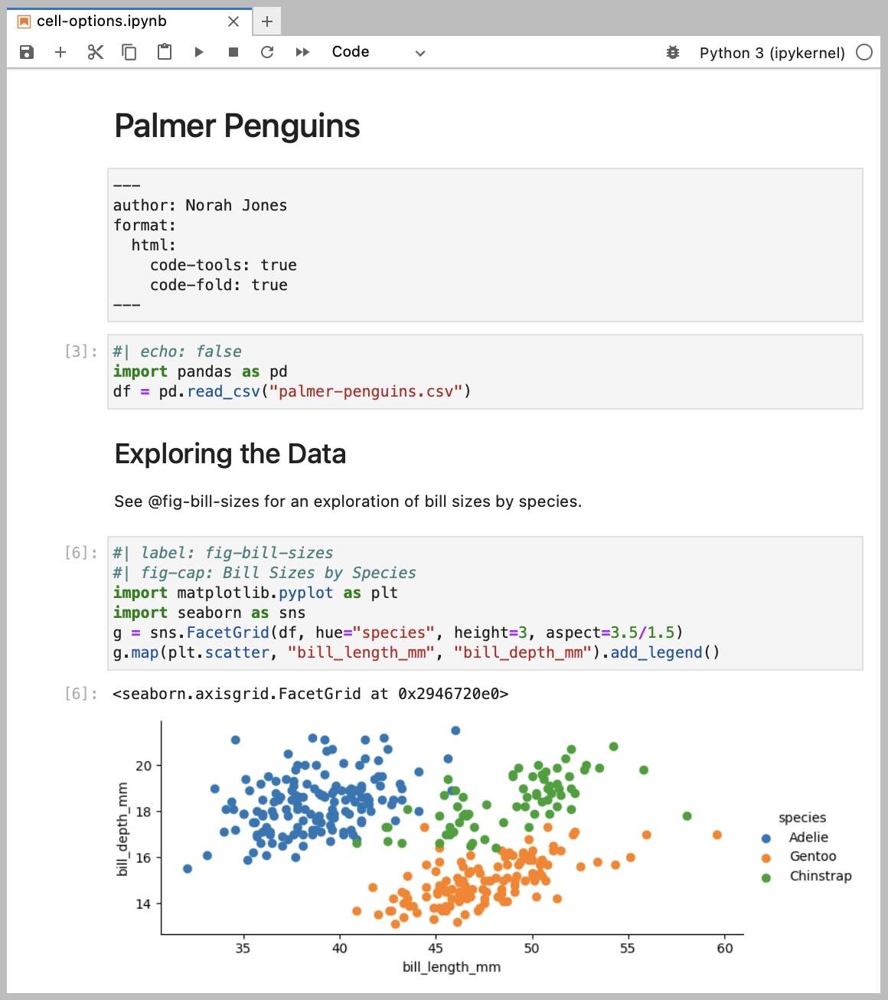
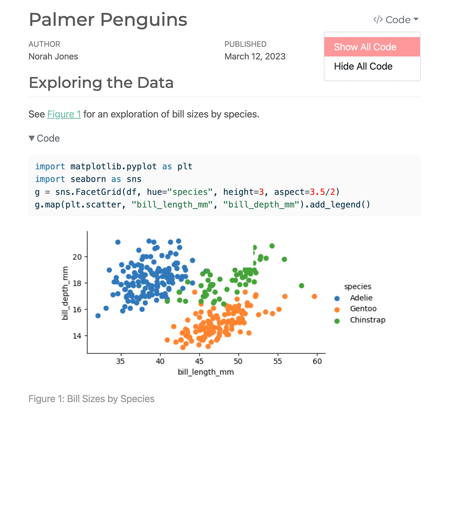
For a full list of examples, see the Quarto Gallery. For using it with VS Code, see Quarto VS Code Extension and for using it with Jupyter Notebook, see Quarto Jupyter Notebook Extension
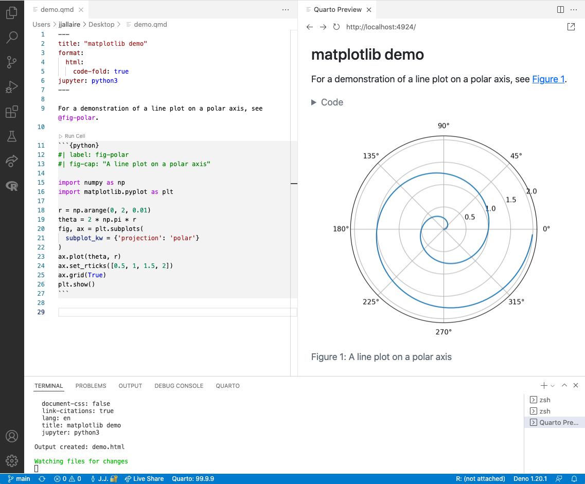
Learn more: Quarto Official Website
TipWhy Quarto for Actuarial Work?
- Create client reports with embedded calculations
- Document your analysis process
- Build presentations with live code
- Generate this course website!
Python Libraries for Data Science
We’ll be using these essential libraries throughout the course:
| Library | Purpose | Example Use in Actuarial Work |
|---|---|---|
| NumPy | Numerical computing | Monte Carlo simulations, matrix calculations |
| Pandas | Data manipulation | Claims data analysis, portfolio management |
| Geopandas | Geographic data manipulation | Geographic data analysis, mapping |
| Matplotlib | Basic plotting | Loss distribution visualization |
| Seaborn | Statistical visualization | Correlation heatmaps, regression plots |
| SciPy | Scientific computing | Statistical tests, optimization |
Note
Note that we do not introduce SciPy and Geopandas in this course, but only briefly refer to them for some examples when learning the other libraries.
Installation Guide
Step 1: Install Anaconda
Visit https://www.anaconda.com/download and download the installer for your operating system.
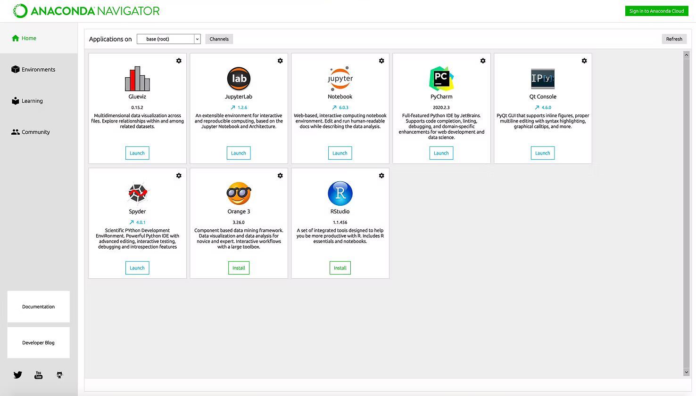
For a detailed installation guide, see the following link Windows Anaconda Installation Guide
Download: 64-bit graphical installer (.exe)
Installation Steps:
- Double-click the downloaded
.exefile - Click “Next” on the welcome screen
- Agree to the license terms
- Choose “Just Me” (recommended)
- Select installation location (default is fine)
- Important: Check “Add Anaconda to my PATH environment variable”
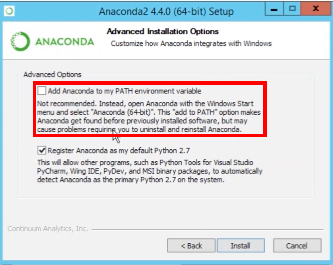
- Click “Install” (takes 10-20 minutes)
- Click “Next” and “Finish”
Verify Installation: - Open “Anaconda Prompt” from Start Menu - Type conda --version
For a detailed installation guide, see the following link macOS Anaconda Installation Guide
Download: 64-bit graphical installer (.pkg) or command line installer
Installation Steps:
- Double-click the downloaded
.pkgfile - Click “Continue” through the introduction
- Agree to the license
- Select installation location (default is fine)
- Click “Install” (may need admin password)
- Installation takes 10-20 minutes
- Click “Close” when finished
Verify Installation:
- Open Terminal (Cmd + Space, type “Terminal”)
- Type
conda --version - If not found, run:
source ~/anaconda3/bin/activate
For a detailed installation guide, see the following link Linux Anaconda Installation Guide and more specifically for Ubuntu Ubuntu Anaconda Installation Guide
Download: 64-bit command line installer (.sh)
Installation Steps:
# Open terminal and navigate to Downloads
cd ~/Downloads
# Make installer executable
chmod +x Anaconda3-2024.XX-Linux-x86_64.sh
# Run installer
bash Anaconda3-2024.XX-Linux-x86_64.sh
# Follow prompts:
# - Press Enter to review license
# - Type 'yes' to accept
# - Press Enter for default location
# - Type 'yes' to initialize condaVerify Installation:
# Restart terminal or run:
source ~/.bashrc
# Check installation
conda --version
WarningCommon Installation Issues
All Platforms:
- Ensure you have at least 5GB free disk space
- Close all Python/Jupyter applications before installing
- Installation typically takes 10-20 minutes
Windows Specific:
- Run installer as regular user, not administrator
- If PATH issues occur, use “Anaconda Prompt” instead of regular Command Prompt
macOS Specific:
- On M1/M2 Macs, ensure you download the ARM64 version
- May need to allow installer in System Preferences → Security & Privacy
Linux Specific:
- Ensure you have bash shell (not sh)
- Add conda to PATH by running
conda init
Step 2: Verify Python Installation
Using Anaconda Prompt (Recommended): 1. Open “Anaconda Prompt” from Start Menu 2. Run these commands:
python --version
conda --version
where pythonExpected output:
Python 3.11.x :: Anaconda, Inc.
conda 23.x.x
C:\Users\YourName\anaconda3\python.exeUsing Terminal: 1. Open Terminal (Cmd + Space, type “Terminal”) 2. Run these commands:
python --version
conda --version
which pythonExpected output:
Python 3.11.x :: Anaconda, Inc.
conda 23.x.x
/Users/YourName/anaconda3/bin/pythonUsing Terminal: 1. Open Terminal (Ctrl + Alt + T) 2. Run these commands:
python --version
conda --version
which pythonExpected output:
Python 3.11.x :: Anaconda, Inc.
conda 23.x.x
/home/YourName/anaconda3/bin/python
TipTroubleshooting
If python command doesn’t work:
- Windows: Use
python3or open “Anaconda Prompt” - macOS/Linux: Try
python3or runsource ~/anaconda3/bin/activate
Step 3: Install Your Chosen IDE
Based on the IDE comparison above, choose and install your development environment:
Good news! Jupyter Notebook is already installed with Anaconda. No additional setup required.
To start using Jupyter:
- Open terminal/Anaconda Prompt
- Type:
jupyter notebook - Your browser will open with the Jupyter interface
Installation:
- Download from https://code.visualstudio.com/
- Install following the default options for your operating system
- Install the Python extension:
- Open VS Code
- Click Extensions icon (or press
Ctrl+Shift+X) - Search for “Python”
- Install the official Python extension by Microsoft
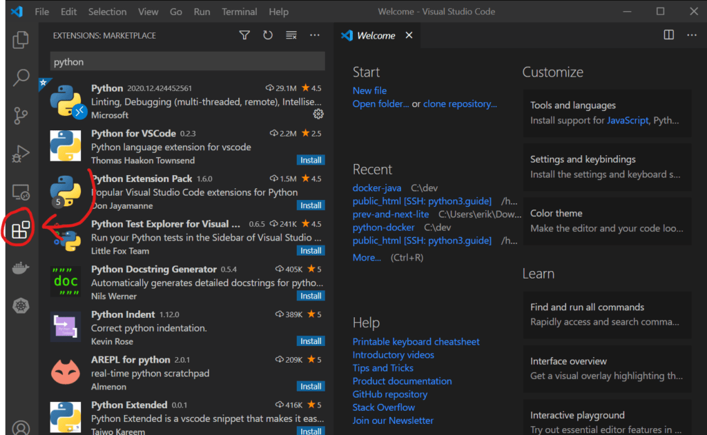
Additional Recommended Extensions:
- Jupyter (for notebook support in VSCode)
- vscode-icons
- GitLens — Git supercharged (not needed for the course as we use GitHub Desktop, but can help in a more professional environment)
NotePro Tip: Start Simple
If you’re new to programming, start with Jupyter Notebook for this course. You can always install VS Code or Cursor later as your projects grow in complexity.
Step 4: Set Up Git and GitHub
Understanding Git vs GitHub Desktop
Git is a version control system that tracks changes in your code. You can use it through: 1. Command Line (traditional method) - More powerful but steeper learning curve 2. GitHub Desktop (visual interface) - Easier for beginners, covers most common tasks
Option A: Install GitHub Desktop (Recommended for Beginners)
GitHub Desktop provides a user-friendly graphical interface for Git operations.
- Download from https://desktop.github.com/
- Install and sign in with your GitHub account
- No command line configuration needed!
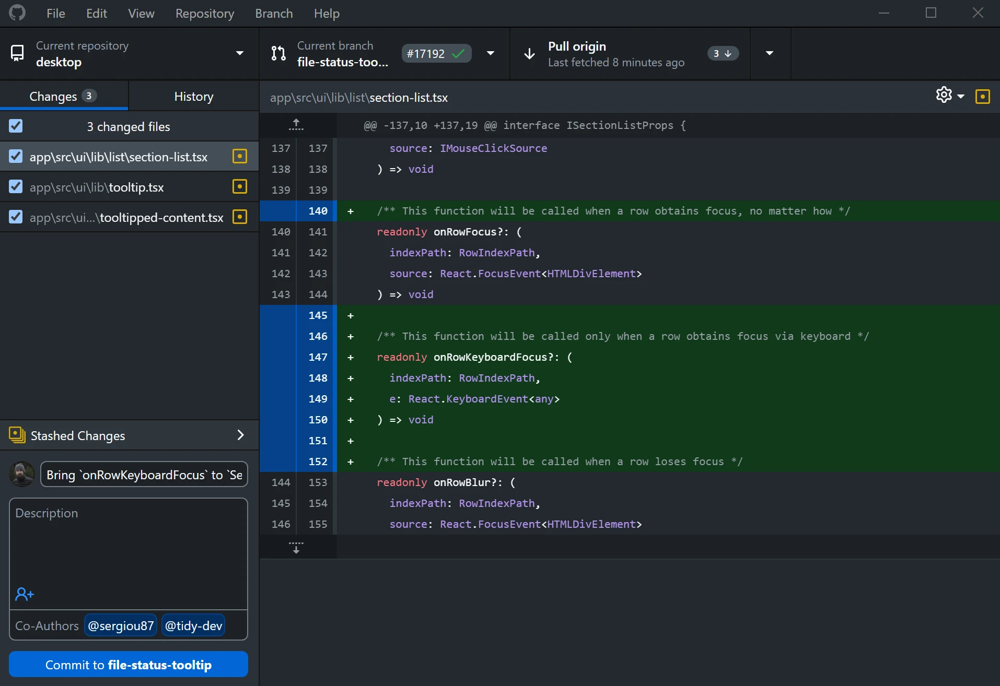
TipWhy GitHub Desktop?
- Visual representation of changes
- Easy commit and push operations
- Built-in merge conflict resolution
- No memorizing Git commands
For a full guide, you can also refer to the following GitHub Desktop Guide
Option B: Install Command Line Git
Install Git:
- Download from https://git-scm.com/
- Run the installer
- Use recommended settings (Git Bash included)
Configure Git:
# Open Git Bash (installed with Git)
git config --global user.name "Your Name"
git config --global user.email "your.email@example.com"Install Git:
# Open Terminal (Applications > Utilities > Terminal)
# Git comes with Xcode Command Line Tools
xcode-select --installConfigure Git:
git config --global user.name "Your Name"
git config --global user.email "your.email@example.com"Install Git:
# Ubuntu/Debian
sudo apt-get update
sudo apt-get install git
# Fedora
sudo yum install git
# Arch
sudo pacman -S gitConfigure Git:
git config --global user.name "Your Name"
git config --global user.email "your.email@example.com"Create GitHub Account
- Go to https://github.com/
- Sign up for a free account
- Choose a professional username (you’ll use this for your portfolio)
Step 5: Install Quarto (Optional but Recommended)
Quarto is what powers this course website and will help you create professional reports.
- Download from https://quarto.org/docs/get-started/
- Run the
.msiinstaller - Follow the installation wizard
Verify Installation:
quarto --version- Download from https://quarto.org/docs/get-started/
- Open the
.pkginstaller - Follow the installation steps
Verify Installation:
quarto --versionUsing package manager:
# Ubuntu/Debian
wget https://github.com/quarto-dev/quarto-cli/releases/download/v1.4.550/quarto-1.4.550-linux-amd64.deb
sudo dpkg -i quarto-1.4.550-linux-amd64.deb
# Or download tar.gz and extractVerify Installation:
quarto --version
NoteWhen to Use Quarto
- Creating your final project report
- Making presentations with code
- Building reproducible analyses
- Generating PDF reports from Jupyter notebooks
Step 6: Test Your Setup
Let’s verify everything is working correctly.
Test Jupyter Notebook
In terminal, run:
jupyter notebookThis should open a browser window with the Jupyter interface.
Test Quarto (if installed)
Create a simple Quarto document to test the installation:
- Create a file called
test.qmdwith this content:
---
title: "My First Quarto Document"
format: html
jupyter: python3
---
## Testing Quarto with Python
```{python}
import numpy as np
import matplotlib.pyplot as plt
# Generate some data
x = np.linspace(0, 10, 100)
y = np.sin(x)
# Create a plot
plt.figure(figsize=(8, 4))
plt.plot(x, y, 'b-', linewidth=2)
plt.title('Sine Wave')
plt.xlabel('x')
plt.ylabel('sin(x)')
plt.grid(True, alpha=0.3)
plt.show()
```
The value of π is approximately {python} np.pi {python}.- Render it:
quarto render test.qmd- Open the generated
test.htmlin your browser
Test Python Libraries
Create a new notebook and run:
Installing Python Packages
Understanding pip
pip is Python’s package installer. It downloads and installs packages from the Python Package Index (PyPI).
Basic pip Commands
# Install a package
pip install package_name
# Install a specific version
pip install package_name==1.2.3
# Install multiple packages
pip install numpy pandas matplotlib geopandas
# Upgrade a package
pip install --upgrade package_name
# Uninstall a package
pip uninstall package_name
# List installed packages
pip list
# Show package information
pip show package_nameInstalling Course Requirements
Create a file called requirements.txt with our course dependencies:
numpy>=1.24.0
pandas>=2.0.0
matplotlib>=3.7.0
geopandas>=1.0.1
seaborn>=0.12.0
scipy>=1.10.0
statsmodels>=0.14.0
scikit-learn>=1.3.0
jupyterlab>=4.0.0Install all at once:
pip install -r requirements.txtVerifying Installations
After installing packages, verify they work correctly:
Managing Virtual Environments
For project isolation, use virtual environments:
Using conda (Recommended for Data Science)
# Create a new environment
conda create -n actuarial_env python=3.11
# Activate the environment
conda activate actuarial_env
# Install packages in the environment
conda install numpy pandas matplotlib seaborn geopandas
# List environments
conda env list
# Deactivate current environment
conda deactivate
# Remove an environment
conda remove -n actuarial_env --allUsing venv (Built-in Python)
# Create virtual environment
python -m venv myenv
# Activate (Windows)
myenv\Scripts\activate
# Activate (macOS/Linux)
source myenv/bin/activate
# Install packages
pip install numpy pandas geopandas
# Deactivate
deactivate
TipBest Practice: Project-Specific Environments
Create a separate environment for each project to avoid package conflicts:
conda create -n project_mortality python=3.11
conda activate project_mortality
pip install -r requirements.txtCommon Installation Issues and Solutions
Issue: “pip is not recognized”
Solution:
# Windows: Use Python to run pip
python -m pip install package_name
# Or add Python Scripts to PATH
# Usually: C:\Users\YourName\Anaconda3\ScriptsIssue: “Permission denied” errors
Solution:
# Install for current user only
pip install --user package_name
# Or use conda instead
conda install package_nameIssue: Package conflicts
Solution:
# Create a fresh environment
conda create -n fresh_env python=3.11
conda activate fresh_env
# Install packages one by one to identify conflicts
pip install numpy
pip install pandas
pip install geopandas
# etc.Issue: “SSL Certificate” errors
Solution:
# Temporarily trust PyPI
pip install --trusted-host pypi.org --trusted-host files.pythonhosted.org package_name
# Or use conda-forge channel
conda install -c conda-forge package_nameUnderstanding the Terminal
What is the Terminal?
The terminal (also called command line, console, or shell) is a text-based interface for interacting with your computer. Instead of clicking buttons, you type commands. It’s essential for:
- Running Python scripts
- Managing packages
- Using Git
- Automating tasks
Terminal Options:
- Command Prompt (cmd) - Basic Windows terminal
- PowerShell - More advanced Windows terminal
- Git Bash - Linux-like terminal (comes with Git)
- Windows Terminal - Modern terminal (Windows 10/11)
How to open: - Press Win + R, type cmd, press Enter - Search “Command Prompt” in Start Menu - Right-click in folder → “Open in Terminal”
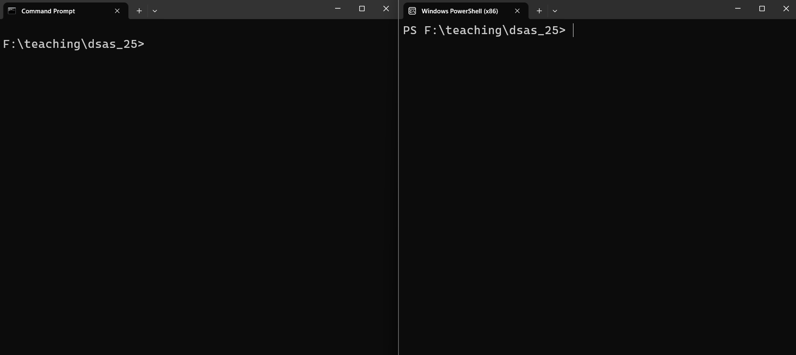
TipRecommendation
Use Git Bash for this course. It provides Linux-like commands that match most tutorials.
Terminal Options: 1. Terminal.app - Default macOS terminal 2. iTerm2 - Popular alternative with more features
How to open: - Press Cmd + Space, type “Terminal”, press Enter - Go to Applications → Utilities → Terminal - Right-click in folder → Services → “New Terminal at Folder”
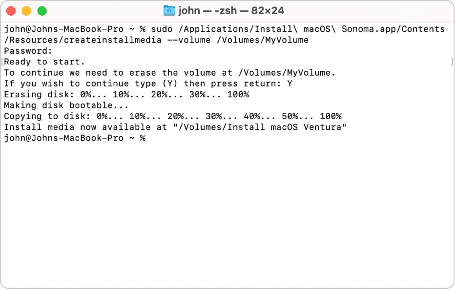
First time setup: - macOS uses zsh shell by default (since Catalina) - Older versions use bash shell
Terminal Options: 1. GNOME Terminal - Ubuntu/Fedora default 2. Konsole - KDE default 3. XTerm - Lightweight option
How to open: - Press Ctrl + Alt + T (most distributions) - Search “Terminal” in applications - Right-click on desktop → “Open Terminal”
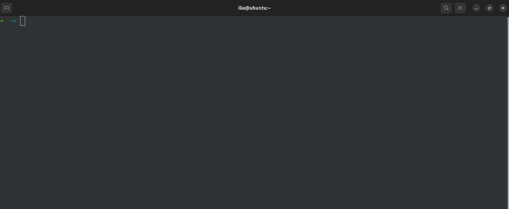
Popular shells: - bash - Most common - zsh - Feature-rich - fish - User-friendly
Your First Terminal Commands
NoteTerminal Basics
- The prompt shows where you are (current directory)
- Commands are case-sensitive
- Use Tab key for auto-completion
- Use ↑/↓ arrows to navigate command history
Command Line Basics
Understanding basic command line operations is essential for data science work.
Essential Commands
These commands work similarly across all platforms:
| Command | Purpose | Example |
|---|---|---|
python |
Run Python | python script.py |
pip |
Install packages | pip install numpy |
git |
Version control | git status |
jupyter |
Start Jupyter | jupyter notebook |
| Command | Purpose | Example |
|---|---|---|
cd |
Change directory | cd Documents |
dir |
List files | dir |
mkdir |
Make directory | mkdir my_project |
del |
Delete file | del file.txt |
cls |
Clear screen | cls |
type |
Show file contents | type README.md |
| Command | Purpose | Example |
|---|---|---|
pwd |
Print working directory | pwd |
ls |
List files | ls -la |
cd |
Change directory | cd Documents |
mkdir |
Make directory | mkdir my_project |
rm |
Remove file | rm file.txt |
clear |
Clear screen | clear |
cat |
Show file contents | cat README.md |
Practice Exercise
Try these commands in your terminal:
# Navigate to your home directory
cd %USERPROFILE%
# See where you are
cd
# Create a course folder
mkdir actuarial_data_science
cd actuarial_data_science
# Create subfolders
mkdir notebooks
mkdir data
mkdir scripts
# List the contents
dir# Navigate to your home directory
cd ~
# See where you are
pwd
# Create a course folder
mkdir actuarial_data_science
cd actuarial_data_science
# Create subfolders
mkdir notebooks
mkdir data
mkdir scripts
# List the contents
ls -la# Navigate to your home directory
cd ~
# See where you are
pwd
# Create a course folder
mkdir actuarial_data_science
cd actuarial_data_science
# Create subfolders
mkdir notebooks
mkdir data
mkdir scripts
# List the contents
ls -laBest Practices for Learning
1. Disable Auto-completion While Learning
ImportantLearning vs. Productivity
“The illiterate of the 21st century will not be those who cannot read and write, but those who cannot learn, unlearn, and relearn.” Alvin Toffler
While auto-completion and AI tools boost productivity, they can hinder learning. During this course, type everything manually to build muscle memory and understanding.
In VS Code, temporarily disable IntelliSense:
- Press
Ctrl+Shift+P(orCmd+Shift+Pon macOS) - Type “Preferences: Open Settings (JSON)”
- Add:
"editor.quickSuggestions": false
In Jupyter, disable auto-completion: 1. Create a Jupyter config: jupyter notebook --generate-config 2. Edit the config file and add: python c.Completer.use_jedi = False
2. Avoid AI Code Generation Tools
While learning fundamentals:
- ❌ Don’t use ChatGPT, GitHub Copilot, or similar tools
- ❌ Avoid copy-pasting code without understanding
- ✅ Type code manually
- ✅ Make mistakes and debug them
- ✅ Understand each line before moving on
NoteFor Your Final Project
You’re welcome to use AI tools for your final project! By then, you’ll have the foundation to use them effectively rather than as a crutch.
Setting Up Your First Project
Let’s create a structured workspace for the course:
If you want a simpler structure for your final project, you can use the following:
project
├── README.md : This file contains the project description and instructions.
├── data : This directory contains all the data files for the project.
├── report : Contains all the report files.
│ └── sections : Contains the seperate sections/chapters of the report.
└── src : This "source code" directory contains all the Python scripts used in this project.Troubleshooting Common Issues
Issue 1: “python” command not found
Solution: Add Anaconda to your PATH or use the Anaconda Prompt (Windows)
Issue 2: Package import errors
Solution: Install missing packages:
conda install numpy pandas matplotlib seaborn geopandas
# or
pip install numpy pandas matplotlib seaborn geopandasIssue 3: Jupyter kernel dies repeatedly
Solution: Create a fresh environment:
conda create -n actuarial python=3.11
conda activate actuarial
conda install jupyter numpy pandas matplotlib seaborn geopandasIssue 4: Git push authentication fails
Solution: Set up SSH keys or use personal access tokens (check GitHub docs)
Your First Data Science Computation
Let’s end with a practical actuarial calculation to test your setup:
Next Steps
Congratulations! Your development environment is now ready. Before our next class:
- Practice Python basics:
- Open a Jupyter notebook
- Try basic arithmetic operations
- Create variables and simple functions
- Explore the tools:
- Navigate folders using the command line
- Create and save a Jupyter notebook
- Make your first Git commit
- Prepare questions:
- Note any installation issues
- Think about actuarial problems you’d like to solve
TipReady for More?
If you finish early, explore:
- Python’s official tutorial: https://docs.python.org/3/tutorial/
- NumPy quickstart: https://numpy.org/doc/stable/user/quickstart.html
- Pandas getting started: https://pandas.pydata.org/docs/getting_started/index.html
Remember: The goal isn’t just to install software, but to understand your tools. Take time to explore each component. See you in the next session where we’ll dive into Python programming!